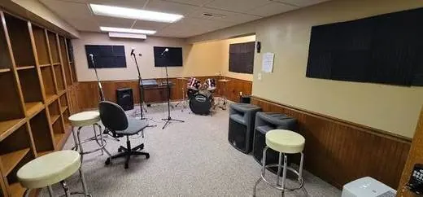
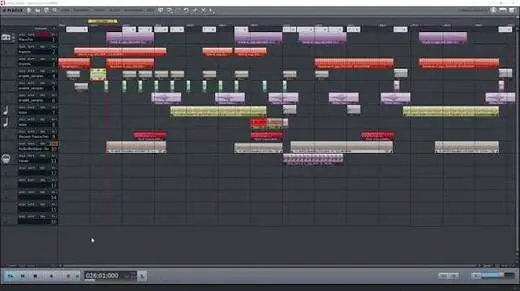

The Contemporary Music Maker
A collaborative project inspired by real life music making, bringing the researcher, the creator, and the performer together in one process, with a leadership role that's entirely yours.
 ♫
♪
♩
♫
♪
♩
- Explain why this project is collaborative by design, and what a "leadership role" actually means
- Describe the three stages (researcher, creator/performer, and curation) and what each produces
- Know exactly what goes in each of the two uploads, and how the 15 minute video is packaged
- Self assess draft work against criteria A, B, C, and D
Runs alongside: Exploring Music in Context, Experimenting with Music & Presenting Music
Weight: 30% of the HL final grade: HL only, not assessed at SL
Assessed: Internally, by your own teacher, then authenticated
Jump to:
What is the contemporary music maker?
This component culminates in a collaborative project inspired by real life practices in contemporary music making. It brings together the roles and skills of researcher, creator and performer, and the processes of exploration, experimentation and presentation, through a real life music making situation in a contemporary setting.
You'll investigate the opportunities, limitations and demands of being a musician in the 21st century. Projects may be studio projects, or inspired by the music industry or a global context: the guide's own examples include exploring unfamiliar performance venues, considering virtual spaces for music making, or collaborating with peers such as dancers, film makers or sound engineers.
Collaboration is compulsory: you must work with at least one other student, each guided by your own artistic intentions and taking a distinct area of responsibility that you lead. Engagement should begin early, ideally with research into potential projects starting from the outset of the course.
Key terms to know
Studio, industry, or global context
The teacher's role here is mentor, not director, advising on feasibility and giving feedback on your project plan, but never dictating or prescribing your choice of project.
- Projects don't need to be transferred to, or executed in, a genuine real life context, but must be modelled on or inspired by real life practice, and you must explain how in your project plan.
- Students, not teachers or visiting artists, must be the decision makers in planning and developing their own projects.
- Two HL students may work on the same project together, as long as each is guided by their own artistic intentions and leads a distinct area of responsibility.
Process evidence: show your working
Process evidence should focus mainly on musical material and be continuously narrated, by voice over or subtitles, linking what's shown back to your stated goals, timeline, collaboration and any adjustments made along the way.
- Collect videos of rehearsals, audio of works in progress paired with images of scores, interviews with collaborators or feedback forms, and evidence of how you used your resources.
- Attribute and acknowledge the allocation of tasks and each collaborator's contribution as you go.
- If planning and process can't be appropriately evidenced, the final project may be treated as a case of academic misconduct. Reference every source you consult.
The three stages
The same three roles you've built all course (researcher, creator, performer) now inside one collaborative project. Tap a stage to see what it looks like in practice.
Stage 1: Researcher
Planning and envisioning the project. You develop and refine clear, achievable project aims according to your musical intentions, through research and inquiry, documented in a project plan that's submitted to your teacher for approval, with regular consultation expected as it's refined.
- Brief summary: your vision and musical goals
- Rationale: real life relevance, the nature of any collaboration, and your role
- Timeline: estimated hours, preparation, rehearsal, other prep time
- Resources: collaborators, space, instruments, technology, a hypothetical budget
- Upload 2: project plan, list of sources, scores
- Criterion B: discussion of the process
- Ongoing consultation and approval from your teacher
A well kept project plan, refined with your teacher as you go, is what makes discussing your process easy later.
Stage 2: Creator & performer
Developing the project in practice. You realize your project goals specific to your identified role, use resources responsibly and imaginatively, set tasks for collaborators, monitor progress, empower contributors, and review the project plan whenever it's necessary.
- Leading a clearly identified, meaningful aspect of the music making project, as evidenced in both the plan and the process itself
- Identifying areas for development and implementing improvement strategies as rehearsal and creation continue
- Collecting process evidence continuously as you go: rehearsal videos, work in progress audio with score images, collaborator interviews or feedback forms
- Upload 1, Section 1: process evidence
- Criterion B: discussion of the process
- Criterion D: organization and presentation
If you can't appropriately evidence the planning and process behind the completed project, it may be treated as a case of academic misconduct: see the process evidence spotlight in "What it is".

Where the project actually gets built: rehearsal after rehearsal, with the room set up to capture it as you go.
Stage 3: Curation & final presentation
The culmination of the project: a video format final presentation, or curated excerpts of one, included in your multimedia submission. The presentation may take many forms; the priority is authenticity to the project.
- Demonstration that your musical goals have been achieved: musical development, and communication of intention and purpose
- Demonstration of musical communication appropriate to the project: musicality, and technical proficiency
- Upload 1, Section 2: final product, curated to max 7 of the 15 minutes
- Criterion A: selection of evidence
- Criterion C: technical and musical proficiency in your identified role

Cutting fifteen minutes of footage down to a curated seven: the same editing skill either way.
Planning & collaboration
Two things define a strong project: a plan built around real life practice, and a collaboration where your leadership role is unmistakable.
Your project plan
The guide's suggested format, in four sections. Tap a card for what belongs in it.
Who you can collaborate with
Collaboration is compulsory, and each collaborator needs their own clearly identified part. Tap a pill for what's allowed.
What you submit
Two uploads: one continuously narrated multimedia video, and one set of supporting documents.
Multimedia presentation
- 1Section 1: Process evidence: work in progress excerpts, continuously narrated
- 2Section 2: Final product (curated, if applicable): max 7 of the 15 minutes
- 3Evaluation of the project's success against your stated musical goals
- 4Referencing: appropriate citation and a list of sources
One continuously narrated video file, compiled in that exact order, accessible in a single viewing, without pausing.
Supporting documents
- 1Project plan: as developed and refined with your teacher
- 2List of sources: written, audio, and audio visual
- 3Scores: only those relevant to the multimedia presentation
If your project is intended for live performance and runs longer than 7 minutes, the video evidence must be curated by you: only what's shown is assessed.
How it's marked
Four criteria, 32 marks total. Tap a criterion to see the mark bands.
Criterion A: Selection of evidence
Judges the nature of the evidence you choose to document your project: is it appropriate and well chosen?
Ask yourself: does my evidence show the project happening, or just tell people about it?
Ineffective and/or rudimentary selection of evidence.
Suitable but formulaic selection of evidence.
Relevant and purposeful selection of evidence.
Resourceful and compelling selection of evidence.
Criterion B: Discussion of the process
Judges how you discuss challenges and successes, examine areas for development, and evaluate the musical and collaborative choices you made, in relation to your stated aims.
Ask yourself: am I just listing what happened, or actually evaluating why it worked?
Outlines challenges/successes; identifies areas for development; states the choices made.
Describes challenges/successes; distinguishes areas for development; demonstrates the choices made.
Explains challenges/successes; investigates areas for development; justifies the choices made.
Discusses challenges/successes; examines areas for development; evaluates the choices made.
Criterion C: Technical and musical proficiency in the identified role
Judges your technical proficiency and musicianship in the specific role you led: researcher, creator, or performer.
Ask yourself: does this sound approximated, or does it genuinely sound like mine?
Approximates the musical aims with ineffective musicianship.
Transmits the musical aims with sufficient musicianship.
Realizes the musical aims with proficient musicianship.
Personalizes the musical aims with compelling musicianship.
Criterion D: Organization and presentation
Judges how well you organize and present your work in the multimedia presentation.
Ask yourself: could someone follow my whole project in one viewing, without pausing?
Ineffective submission.
Inconsistent submission.
Purposeful submission.
Resourceful and imaginative submission.
Before you submit
Distilled from the assessment guidance: the habits that separate a strong submission from a rushed one.
- Start researching potential projects from early in the course: don't wait until deadlines are close.
- Make sure at least one other student is genuinely collaborating, and that your own leadership role is clearly identified from the start.
- Write your project plan around the four sections (brief summary, rationale, timeline, resources) and get your teacher's approval before committing.
- Collect process evidence continuously as you go: rehearsal videos, work in progress audio with score images, collaborator interviews or feedback forms.
- Narrate your process evidence throughout, voice over or subtitles, so it's accessible in one viewing, without pausing.
- If your plan changes, document the change as evidence of review, evaluation and adjustment: don't just quietly redo the plan.
- Keep every collaborator's contribution clearly attributable: the work, and each identified role within it, must be traceable to real students.
- Curate the final product down to a maximum of 7 of the 15 minutes, choosing excerpts that clearly show your artistic goals being realized in your role.
- Get your final presentation authenticated by your teacher using the 6/MCAF form before submission.